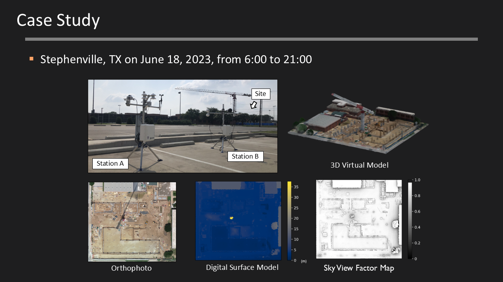
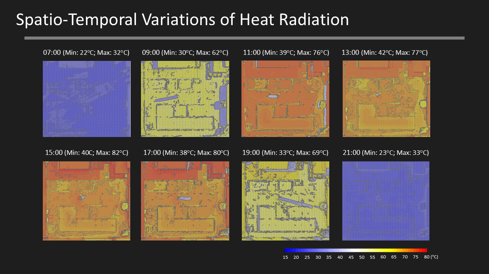
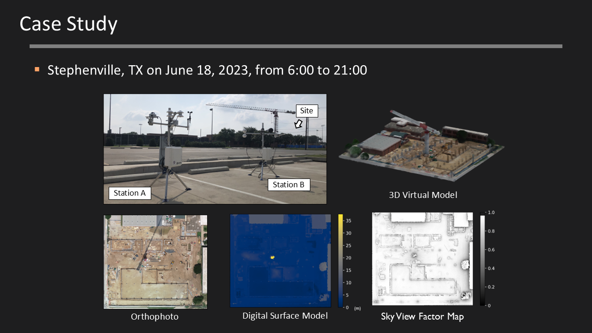
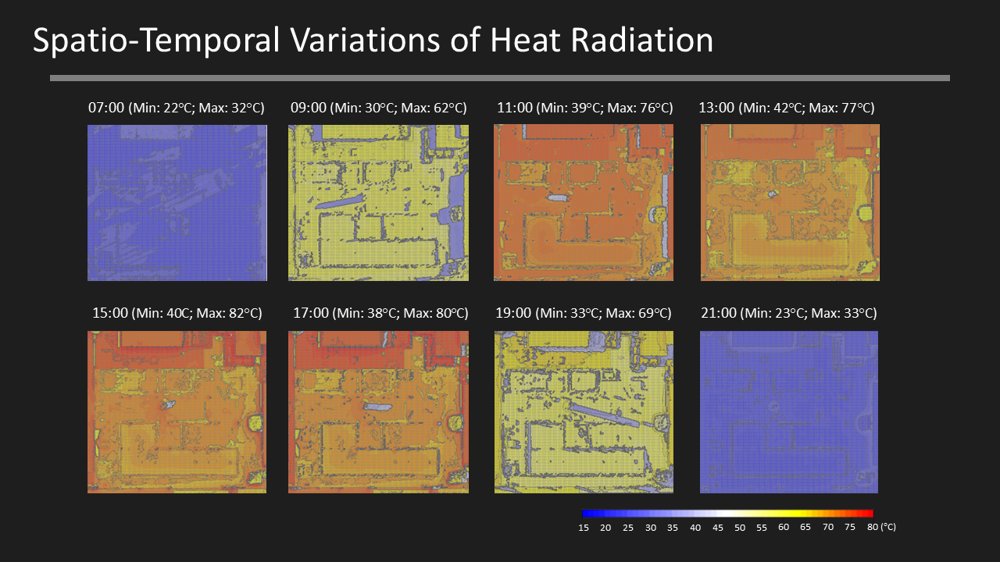

About Me
I am a PhD Candidate in Construction Science and a ME Student in Computer Engineering at Texas A&M University, expecting to graduate from both programs in May 2025.
My research is centered on Smart Construction, leveraging advanced automation and information technologies to address challenges in construction practices.
Under the guidance of Dr. Youngjib Ham, my current research explores how Digital Twins—integrating multimodal sensors, advanced computational models, and seamless data communication—can improve occupational health and safety by providing real-time insights and predictive analytics.
Education
-
Texas A&M University, TX
- Ph.D. in Construction Science (Smart Construction), May 2025
- M.E. in Computer Engineering, May 2025
-
Inha University, South Korea
- M.E. in Architectural Engineering (Construction Management), 2018
- B.S. in Architectural Engineering, 2016
Experience
-
Research Assistant, Department of Construction Science, Texas A&M University, 2021 ~ Present
Smart Construction Lab (Advisor: Dr. Youngjib Ham)
-
Researcher, Department of Architectural Engineering, Sungkyunkwan University, 2020 ~ 2021
Smart Construction Lab (Advisor: Dr. Sung-Han Sim)
-
Researcher, Korea Engineering & Consulting Association, 2018 ~ 2020
-
Research Assistant, Department of Architectural Engineering, Inha University, 2015 ~ 2018
Construction Automation Lab (Advisor: Dr. Youngsuk Kim)
Honors & Awards
-
Outstanding PhD Student Service Award, Department of Construction Science, Texas A&M University, 2024
-
Extramural Scholarship ($5,000), Korean-American Construction Engineering and Project Management Association (KACEPMA) & Hanmi Global, Corvallis, OR, 2023
-
Best Paper Award, The 9th International Conference on Construction Engineering and Project Management (ICCEPM), Las Vegas, NV, 2022
-
Top Off Scholarship ($15,000), Department of Construction Science, Texas A&M University, 2021
-
Best Paper Award Runner-up, The 7th International Conference on Construction Engineering and Project Management (ICCEPM), Chengdu, China, 2017


 


